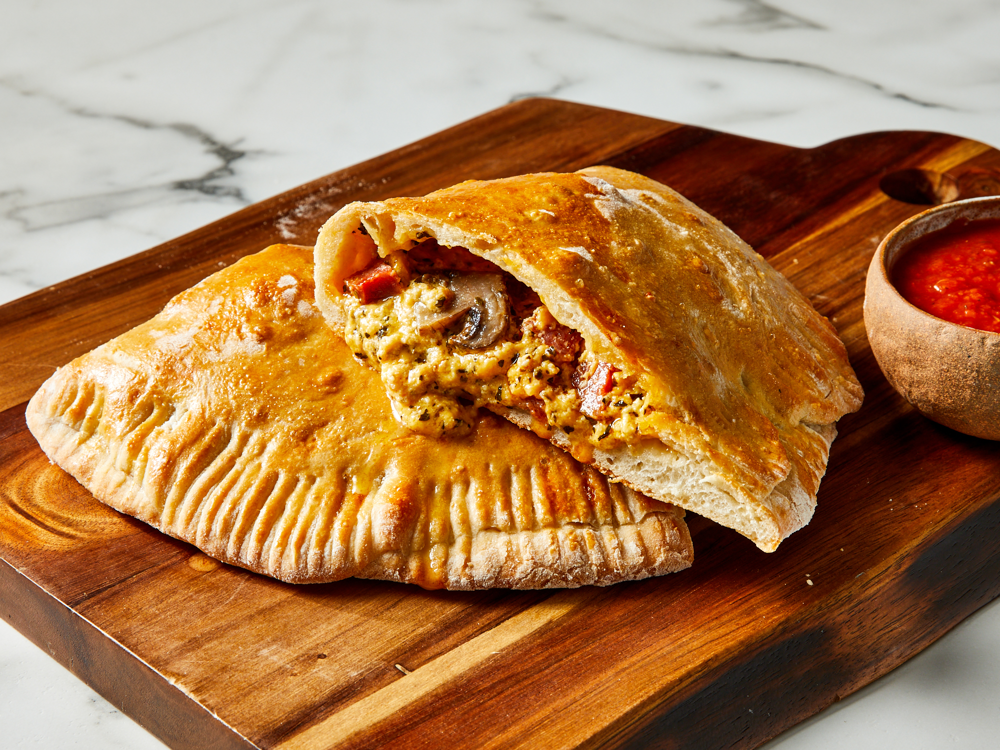

Calzone Recipe

Description
A calzone is a savory Italian turnover. It traditionally consists of a cheesy filling in a leavened dough and is served with marinara sauce on the side.
The calzone originated in Naples in the 18th-century.
Ingredients
Dough
- 1 (.25 ounce) package active dry yeast
- 1 cup warm water
- 1 tablespoon olive oil
- 1 teaspoon white sugar
- 1 teaspoon salt
- 2 ½ cups all-purpose flour, plus more for dusting
- 1 teaspoon olive oil
- 1 large egg, beaten
Filling
- 1 ½ cups shredded Cheddar cheese
- ½ cup ricotta cheese
- ½ cup diced pepperoni
- ½ cup sliced fresh mushrooms
- 1 tablespoon dried basil leaves